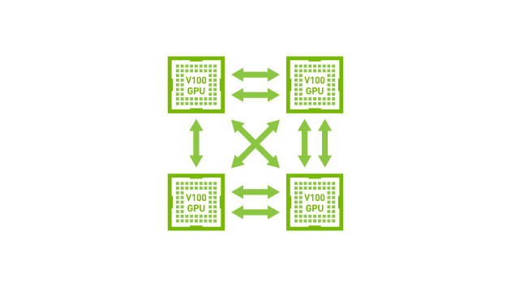
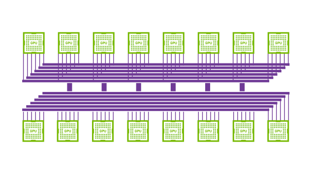
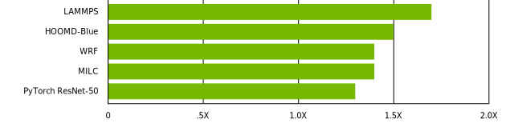

Быстрые и масштабируемые технологии соединения
Во всех отраслях разработчики используют параллельные вычисления в различных приложениях, например для ИИ, что обусловливает необходимость в системах с несколькими GPU. Стандартным решением сложных задач являются мультипроцессорные конфигурации с PCIe, однако пропускная способность PCIe часто становится узким местом. В этом случае необходима более быстрая и масштабируемая технология соединения.
Работа комбинации NVLink и NVSwitch
Представляем NVIDIA® NVLinkTM и NVIDIA NVSwitchTM. NVLink – это высокоскоростная технология прямого соединения между GPU. NVSwitch обеспечивает соединение нового уровня, используя несколько NVLink для всесторонней связи GPU в одном узле, например в NVIDIA HGX-2TM. Комбинация NVLink и NVSwitch обеспечила рекорд NVIDIA в MLPerf, первом отраслевом бенчмарке для ИИ.
NVLink

Tesla V100 с NVLink: соединение между GPU
NVSwitch

Всесторонняя коммуникация 16 GPU
NVLink
Максимальная пропускная способность с NVLink
Технология NVIDIA NVLink решает эти проблемы, обеспечивая более высокую пропускную способность, большее число соединений и улучшенную масштабируемость для конфигураций с несколькими GPU. Один графический ускоритель NVIDIA Tesla® V100 поддерживает до шести соединений с общей пропускной способностью 300 Гб/с, что в 10 раз превосходит показатели PCIe третьего поколения. Технология позволяет увеличить масштабируемость серверов, например, NVIDIA DGX-1TM и DGX-2 для ускорения тренировки моделей глубокого обучения. NVLink обеспечивает поддержку до 8 GPU на одной виртуальной машине с помощью ПО NVIDIA Quadro Virtual Data Center Workstation (vDWS) или NVIDIA Virtual Server (vComputeServer).
Максимальное ускорение передачи данных между GPU
Впервые технология NVLink была использована в Tesla V100 на архитектуре NVIDIA Pascal™ и повысила скорость передачи данных с 20 до 25 Гб/с в каждом направлении. Прямое соединение двух GPU повышает точность и конвергентность высокопроизводительных вычислений (НРС) и ИИ и позволяет передавать данные на порядок быстрее PCIe.
Новый уровень производительности
NVLink может обеспечить прирост производительности до 70% по сравнению с сервером с идентичной конфигурацией и другим типом внутреннего соединения. Значительное увеличение пропускной способности и снижение задержек позволяют еще больше повысить производительность в задачах глубокого обучения.
NVLink Delivers Up To 70% Speedup vs PCIe

NVLink: GPU Servers: Dual Xeon Gold 6140@2.30GHz or E5-2698 v4@3.6GHz for PyTorch with 8xV100
PCIe vs 8xV100 NVLink. SW benchmarks: MILC (APEX medium). HOOMD-Blue (microsphere), LAMMPS (LJ 2.5).
NVSwitch
NVSwitch: Полное подключение NVLink
Быстрое внедрение алгоритмов глубокого обучение создало необходимость в более быстрой и масштабируемой технологии внутреннего соединения, так как пропускная способность PCIe все чаще становится узким местом систем с несколькими GPU.
Для решения этой проблемы NVIDIA NVSwitch использует расширенные возможности соединения NVLink. Матрица GPU повышает производительность глубокого обучения, позволяя использовать больше GPU на одном сервере и обеспечивая полноценное подключение.
Полноценное соединение для непревзойденной производительности
NVSwitch – это первая архитектура, которая поддерживает 16 GPU в серверном узле и обеспечивает коммуникацию всех восьми пар со скоростью 300 Гб/с для каждой. Эти 16 GPU можно использовать как один огромный ускоритель с объемом памяти 0,5 Тб и вычислительной производительностью 2 петафлопса в задачах глубокого обучения. Одна система HGX-2 или DGX-2 с NVSwitch повышает производительность приложений до 2,7 раза по сравнению с 2 системами HGX-1 или DGX-1 с соединением InfiniBand.
NVSwitch Delivers a >2X Speedup for Deep Learning and HPC
2 сервера HGX-1V оснащены двухсокетным процессором Xeon E5 2698v4 и 8 ускорителями V100. Серверы подключены через 4 IB-порта 100 Гб (работают на DGX-1) | Сервер HGX-2 оснащен двухсокетным процессором Xeon Platinum 8168, 16 ускорителями V100 и NVSwitch (работает на DGX-2).
IFS ECWMF: Integrated Forecasting System (IFS) – это глобальная модель численного прогнозирования погоды, разработанная Европейским центром среднесрочных прогнозов погоды (ECMWF) в Рединге, Великобритания. ECMWF – независимая межправительственная организация, поддерживаемая большинством европейских стран. Для обновления прогнозов она использует один из крупнейших супервычислительных центров в Европе В тестовом мини-приложении IFS основное внимание уделяется трансформации сферических гармоник, которая представляет собой серьезную нагрузку на всю модель вычислений. Показатели ускорения на графике выше, чем для полной модели IFS, так как тест усиливает стадии трансформации алгоритма. Тем не менее, тест доказывает, что эффективные и проверенные методы прогнозирования ECMWF действительны на серверах с технологией NVSwitch, например, на NVIDIA DGX-2, так как эти серверы идеально подходят для выполнения подобных задач.
Модель смешения мнений экспертов (MoE): На основе нейронной сети опубликованной Google в репозитории Tensor2Tensor на GitHub, с использованием модели Transformer и слоев MoE. Каждый слой модели MoE состоит из 128 экспертов и является глубокой нейронной сетью прямого распространения меньшего размера. Каждый эксперт специализируется на различных областях знаний, и все они распределены по разным GPU, что создает большой поток данных вследствие коммуникации между слоями Transformer и MoE. Согласно Google, для тренировочного бенчмарка на моделирование языка использовался массив данных из 1 миллиарда слов. В тесте используются тензорные ядра NVIDIA Volta и требуется 45000 шагов, чтобы достичь перплексивности, равной 34. Размер выборки для данной нагрузки равен 8192 на GPU.